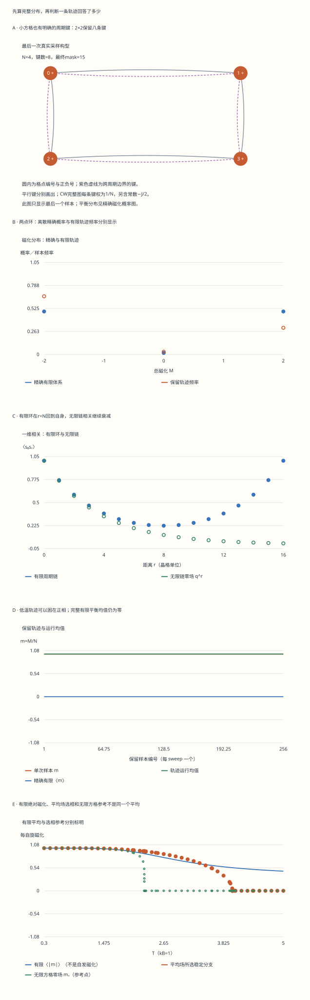

本页目录
统计进阶 II · Ising 模型：精确求和、抽样与相变
前置：配分函数与热力学响应、相变与 Landau 理论、矩阵特征值；概率转移矩阵可作为选学补充。
本课目标：从一个有限自旋图亲手得到精确答案，再判断抽样与平均场各自能回答什么。能区分有限平均、长时间轨迹和热力学极限。
1. 一条磁化几乎不变的轨迹，可能还没有回答问题
先问“平均了什么”，再比较两个数
你让九个自旋在低温下不断翻转。画面大部分时间都是向上，轨迹平均磁化接近 \(1\)。同伴把所有 \(2^9=512\) 个状态的概率逐一相加，却得到零。谁算错了？
在零外场的有限体系里，把所有自旋同时反号不会改变能量，因此正、负磁化状态严格成对。完整平衡分布的平均磁化为零。一条短轨迹可能长期停在正磁化区域；它描述了实际跑过的状态，却未必充分探索了平衡分布。此时两份计算的差异就是要研究的现象。
本课把三种答案放在同一张桌上：有限体系的精确求和、逐步可核对的随机更新、平均场与无限方格的条件性参考。学习顺序是先定义模型，再求精确答案，再研究近似为什么有效或失效。后面出现的“精确”，始终附带模型与极限条件。
2. 从图和能量开始：两点环为什么有两条键？
每个格点上放一个经典变量 \(s_i=\pm1\)，总磁化记作 \(M=\sum_i s_i\)，每自旋磁化为 \(m=M/N\)。取 \(k_B=1\)，温度 \(T>0\)，铁磁耦合 \(J\ge0\)，外场 \(h\) 的单位与能量相同。有限近邻图的定义是
这里的自旋是经典二态变量，没有量子叠加或非对易算符。改变 \(J/T\) 是改变能量偏好与热涨落的竞争；并不是让每个自旋的数值连续缩小。
周期边界也属于模型定义。 环链按每个 \(i\to i+1\) 记一条键。对两个格点，\(0\to1\) 与 \(1\to0\) 是两条周期键，所以能量为 \(-2Js_0s_1-h(s_0+s_1)\)。二维方格从每个格点向右、向下各记一条键，共 \(2N\) 条；\(2\times2\) 周期方格有八条键。同一对端点可以对应不同的周期键，不能默默去重。
这是有限小尺寸约定，不是说宏观材料里同一条物理键要重复算两次。它使小图与后面的周期转移矩阵定义完全一致。构型图用两条曲线区分平行键，完整键表可逐项检查；若换成四条边的正方形，那是另一个有限模型。
全连接 Curie–Weiss 模型另定义为 \(H_{\rm CW}=-JM^2/(2N)-hM\)。展开平方后，每对不同格点的键权为 \(1/N\)，还包含与构型无关的常数 \(-J/2\)。这个常数不影响翻转概率，却影响 \(Z\)、能量与自由能的绝对值，本课保留它。
3. 不靠抽样，也能先得到一个完整答案
本实验最多有十六个自旋，因此最多枚举 \(65536\) 个状态。与其在屏幕上列出六万行，可以按相同的总键和 \(B=\sum_e s_i s_j\) 与磁化 \(M\) 合并。态密度 \(g(B,M)\) 就是具有这两个整数值的状态数：
这一步是无损合并，没有把微观涨落平均掉。表中保留全部整数多重度和一个代表构型；每个代表的二进制位依次指定各格点自旋。CW 情况使用整数分子 \(M^2\) 与分母 \(2N\) 表示相互作用，避免把它误认成近邻键和。
为了避免低温指数太大，实际求和先减去最大的指数 \(a_{\max}\)：计算 \(\widetilde Z=\sum g\,e^{a-a_{\max}}\)，再恢复 \(\log Z=a_{\max}+\log\widetilde Z\)。概率只需用平移后的权重除以 \(\widetilde Z\)。这是代数等价变换；浮点四舍五入仍存在，但没有蒙特卡洛抽样误差。
从 \(Z\) 的外场导数可得 \(\langle M\rangle=T\partial_h\log Z\)。再求一次导数，得到每自旋的磁化响应 \(\chi_N=\partial_h\langle m\rangle=\operatorname{Var}(M)/(NT)\)。类似地，每自旋热容为 \(C_N=\operatorname{Var}(H)/(NT^2)\)。两者都非负，因为它们是方差乘正系数。
低温时 \(\langle H^2\rangle\) 与 \(\langle H\rangle^2\) 可能极接近。实验直接累加 \(\sum p(H-\langle H\rangle)^2\)，降低两大数相减带来的误差。Binder 量定义为 \(U_4=1-\langle M^4\rangle/(3\langle M^2\rangle^2)\)。它可用于后续有限尺寸分析，但一个小尺寸上的数值不能独自证明临界指数。
4. 零均值、双峰与自发磁化分别是什么意思？
在有限 \(N\)、\(h=0\) 时，\(H(s)=H(-s)\)，而 \(M(-s)=-M(s)\)。将配分函数中的状态两两配对，所有奇次磁化矩恰好抵消。因此 \(\langle M\rangle=0\)，同时 \(\langle|M|\rangle\) 与 \(\langle M^2\rangle\) 可以很大。分布有两个远离零的峰，与均值位于零完全相容。
自发磁化通常按选相极限定义为 \(m_+(T)=\lim_{h\to0^+}\lim_{N\to\infty}\langle m\rangle_{N,h}\)。先让系统变大，再撤去极小的正外场，可以保留正相。如果先在每个有限 \(N\) 上令 \(h=0\)，随后取 \(N\to\infty\)，翻转对称的平均仍为零。极限次序给出了不同问题。
时间平均还涉及第三种极限：观察多久。在理想随机更新满足适当条件时，无限长时间平均可收敛到有限体系平衡平均；实际只有几十或几百个保留样本时，这个极限尚未发生。低温相间跃迁很慢，误差不能只用“样本数看起来很多”判断。
先在“低温困在正相”预设观察轨迹，再切换初态与种子。预期看到的不是每次都完美重合，而是精确分布不变、有限轨迹可能不同。将 \(\langle|m|\rangle\) 当作有限尺寸诊断有帮助，但不要在标签上将它改写为无限体系的自发磁化。
5. 一维转移矩阵：把指数级求和变成矩阵相乘
令 \(K=J/T\)、\(b=h/T\)。将每个格点的外场能量一半分给左键，一半分给右键，定义
行列按 \(s=-1,+1\) 排列。乘积中的每个中间自旋指标被求和，最后的迹让终点与起点相接；因此这不是只在形式上像配分函数，而是逐项相同的状态和。两点环的迹中出现两次同一对自旋的相互作用，正好对应前面的双键约定。
两个特征值为 \(\lambda_\pm=e^K[\cosh b\pm\sqrt{\sinh^2b+e^{-4K}}]\)，从而 \(Z_N=\lambda_+^N+\lambda_-^N\)。有限温度下矩阵各元素严格为正，最大特征值单独占优；热力学极限的每自旋自由能为 \(f_\infty=-T\log\lambda_+\)。
对外场求导得到 \(m_\infty=\sinh b/\sqrt{\sinh^2b+e^{-4K}}\)。任意固定 \(T>0\) 下，\(h\to0\) 给出零。零场无限链的相关函数为 \(q^r\)，其中 \(q=\tanh K\)，相关长度 \(\xi=-1/\log q\) 有限；\(J=0\) 时不同格点独立，可取 \(\xi=0\)。
有限环中，自旋之间有顺、逆两个方向的相关传播路径，因此 \(\langle s_0s_r\rangle_N=(q^r+q^{N-r})/(1+q^N)\)。 在 \(r=N\) 时回到同一个格点，相关为 \(1\)，不能拿无限链的 \(q^N\) 去替代它。实验逐点同时展示有限环的矩阵结果与零场公式。
这也解释了为什么一维平均场给出的有限温度相变有问题：真实链允许畴壁，有限温度下它们破坏长程有序。只有 \(T\to0\) 时相关长度才发散。本段讨论最近邻、有限耦合、无额外长程作用的一维模型。
6. 二维小条带也能用转移矩阵，但还不是无穷二维解
把一整行宽为 \(W\) 的自旋看作一个“行状态” \(a\)，共有 \(2^W\) 种。记行磁化 \(M_a=\sum_i a_i\)、行内周期键和 \(B_a=\sum_i a_i a_{i+1}\)。行间转移矩阵定义为
每次转移完整计入行间键，行内能量与外场各分一半。闭合乘积后，每行被相邻两个转移因子访问，正好补成一份完整行内能量。宽或高为二时，周期键的重数也完整保留。
实验将 \(W=2,3,4\) 的矩阵及从零次到 \(L\) 次的所有矩阵幂列出，再与独立的全状态求和核对。矩阵维数分别为 \(4,8,16\)，规模足够小，可以直接检查某个元素对应的两行自旋。
固定宽度而让长度无限大，仍是一个有限宽条带；不能仅凭最大特征值计算就声称已经解决无限二维系统。二维热力学极限还要求横向宽度增长。矩阵维数随宽度指数增长，也自然引出张量网络、压缩转移算符等后续方法。
7. 真正运行一次抽样：能量变化必须与整个图对得上
从一个构型出发，随机选格点 \(i\)，尝试令 \(s_i\to-s_i\)。其他自旋不动。近邻图的能量变化为 \(\Delta H=2s_i(J\sum_{j\sim i}w_{ij}s_j+h)\)， 邻居列表保留每一条键的重数。CW 的自项常数不变，计算可化为 \(\Delta H=2s_i[J(M-s_i)/N+h]\)。
本页采用固定惰性系数 \(1/2\) 的 Metropolis 更新：接受概率是 \(a(s\to s')=\frac12\min(1,e^{-\Delta H/T})\)。 降低能量的尝试也只有一半概率执行。这样做保留了目标分布，又给理想随机核一个明确的自环。尤其在 \(J=h=0\) 时，若每次都翻转，自旋配置的奇偶性会每步交替；偶数 \(N\) 下每 \(N\) 步取样可能永远只落在一个奇偶子集。惰性更新避免了这个周期性问题。
每次尝试记录选点原始整数、接受原始整数、选中的格点、翻转前后构型、能量变化与接受决定。一个 sweep 定义为 \(N\) 次有放回的随机选点尝试；它并不保证每个格点恰好访问一次。每个 sweep 结束后重算完整能量，防止浮点增量长期累积漂移。
理想均匀选点的转移概率是 \(P(s,s')=a(s\to s')/N\)。将 \(\pi(s)=e^{-H(s)/T}/Z\) 代入，就有
这是详细平衡，不要求两个方向的接受概率相等；相等的是“处在起点的概率×转移概率”。实验保留若干完整边的正反概率流，并使用对数显示非常小的数。公式给出所有允许单点翻转的证明，表格提供可手查的具体见证。
8. 可复现不等于独立：怎样阅读抽样诊断？
实验采用明确的 32 位伪随机整数生成规则，固定种子和初态即可复现轨迹。每次尝试消耗两个原始整数，分别用于选点和接受判断；随机初态另有逐格点原始记录。实际有限位数的伪随机流是实现层面的近似，前一节关于平衡分布的推理针对理想随机核。
先丢弃指定数量的初始 sweeps，再每 sweep 保留一个样本。丢弃期可以降低初态影响，不是已经平衡的证明。同样，运行均值逐渐平坦也可能只是轨迹一直困在同一磁化区域。应同时比较不同初态、不同种子、精确磁化直方图与有限热力学答案。
本页给出的短滞后相关使用整段保留轨迹的均值，按每个滞后的可配对数计算协方差，再除以整段的中心二阶矩。它是描述性诊断；有限样本归一化使某些估计不必严格落在 \([-1,1]\)。常值轨迹的方差为零，相关系数直接标为“不适用”，不会伪造一个有效样本数。
抽样得到的 \(\operatorname{Var}(M)/(NT)\) 与 \(\operatorname{Var}(H)/(NT^2)\) 在页面中称为估计值。它们不能自动附带独立样本的 \(1/\sqrt n\) 误差条。本实验的精确小体系基准，正好可以帮助你看见自相关、相间跃迁与有限观察时间分别造成什么影响。
9. 平均场为何给出一个不同的相变温度？
把周围自旋的影响以平均磁化替代，会得到自洽方程 \(m=\tanh[(K_{\rm MF}m+h)/T]\)。近邻链的 \(K_{\rm MF}=2J\)，方格的 \(K_{\rm MF}=4J\)；CW 的热力学平均场能标是 \(J\)。CW 这里使用 \(N\to\infty\) 的自由能密度，不是有限 \(N\) 独立乘积试探分布的精确变分函数；有限模型仍由二项式求和给出。这里 \(K_{\rm MF}\) 有能量单位，不要与第 5 节无量纲的 \(K=J/T\) 混用。
能够直接解释能量与熵竞争的变分自由能为
端点用 \(0\log0=0\) 连续定义。求导得 \(f'_{\rm MF}=T\operatorname{atanh}m-K_{\rm MF}m-h\)，驻点与自洽方程一致；二阶导数为 \(T/(1-m^2)-K_{\rm MF}\)。稳定局部根上的外场响应是 \(\chi_{\rm MF}=(1-m^2)/[T-K_{\rm MF}(1-m^2)]\)。 不要把其他辅助势的曲率倒数直接当成这个热力学响应。
数值上在有效场坐标 \(y=(K_{\rm MF}m+h)/T\) 中求解 \(Ty-K_{\rm MF}\tanh y-h=0\)。即使很低温时 \(m\) 已浮点舍入成 \(1\)，\(y\) 仍为有限数，能保留驻点与曲率信息。求根区间按导数零点分成单调段；表中列出所有根，局部极大与临界平坦根不会被当成普通稳定响应。
在零场展开熵得 \(f_{\rm MF}=-T\log2+(T-K_{\rm MF})m^2/2+Tm^4/12+\cdots\)。由此得到平均场 \(T_c^{\rm MF}=K_{\rm MF}\) 与 \(m_*\propto(T_c-T)^{1/2}\)。这是近似的推论。对有限 CW，精确二项式求和仍有零场对称平均；对近邻一维链，平均场的有限温度相变本身就是错误预测。
10. 二维精确结果告诉我们：对称性相同，指数也可能不同
无限、各向同性、最近邻铁磁方格在零场有 \(T_c=2J/\log(1+\sqrt2)\)。 它约为 \(2.269185J\)，低于平均场的 \(4J\)。临界曲线会非常陡：磁化连续趋零，但左侧斜率发散；陡直的画面本身不是一阶跳变的证据。选定正相的自发磁化为 \(m_+(T)=[1-\sinh^{-4}(2J/T)]^{1/8}\)（\(0<T<T_c\)），临界及以上为零。这是有严格适用条件的二维结果，不是小方格抽样拟合出来的公式。
临界温度与自由能的精确求解通常联系到 Onsager；自发磁化公式的首个公开推导由 Yang 完成。这里给出结果与条件，不把几行数值曲线包装成完整二维精确解的证明。进一步推导涉及转移矩阵结构、相关函数与行列式极限。
| 问题 | 有限 \(N\)、零场 | 无限一维近邻链 | 无限二维方格、零场选相 | 平均场 |
|---|---|---|---|---|
| \(\langle m\rangle\) | 严格为零 | 任意 \(T>0\) 为零 | \(T<T_c\) 可有 \(m_+>0\) | 稳定分支可非零 |
| 有限正温度奇点 | 没有 | 没有 | 在 \(T_c\) 出现 | 在自身 \(T_c^{\rm MF}\) 出现 |
| 临界磁化幂 | 不能直接定义为奇点指数 | 此处无有限温度临界点 | \(1/8\) | \(1/2\) |
| 页面中的角色 | 精确基准 | 转移矩阵交叉核对 | 有条件的解析参考 | 待检验的近似 |
同样的自旋翻转对称性，允许我们写出类似的 Landau 展开，却不能单靠对称性决定真实涨落修正后的指数。上一课的 Ginzburg 判据正是在检查这一点。本页不把有限热容峰位置当作精确相变点，也不把非零外场下的方格曲线称为 Yang 零场解。
11. 先预测，再运行：做三个能够复核的小实验
实验 A：从两点环检查全部因子。 选择“两点环”，打开键表、态密度与转移矩阵。手算四个状态的能量和权重，再核对 \(\operatorname{Tr}\mathsf T^2\)。如果差一个 \(2\)，先查周期键定义；如果外场差一倍，检查分摊到两侧的半权重。
实验 B：故意观察一条不充分的轨迹。 选择“低温困在正相”，记录精确 \(\langle m\rangle\)、精确 \(\langle|m|\rangle\)、轨迹均值与直方图。换初态、种子与保留长度。先写预测：更长是否一定已经跨相？结果没有跨相时，解释为什么“接受率低”与“平均值看似稳定”都不能证明已平衡。
实验 C：比较尺寸、近似与极限。 在零场方格预设观察 \(2\times2\)、\(3\times3\)、\(4\times4\) 的精确响应。比较有限 \(\langle|m|\rangle\)、平均场分支、无限方格 \(m_+\)。指出图中哪条曲线已经用了热力学极限，哪条仍是有限状态和。切到链预设，验证平均场为何不能正确预测一维相变。
无脚本对照：下列图表来自六组固定完整记录。精确有限求和、有限轨迹、平均场与无限体系参考保留不同标签。

| 预设 | N | 精确〈m〉 | 精确〈绝对m〉 | 轨迹均值 | 精确每自旋C |
|---|---|---|---|---|---|
| square3 | 9 | 0 | 0.864078905 | 0.951388889 | 0.635668648 |
| two-sites | 2 | 0 | 0.98201379 | -0.359375 | 0.14130165 |
| chain16 | 16 | 0 | 0.579217039 | 0.17578125 | 0.466266666 |
| square2 | 4 | 0 | 0.933709173 | 0.08203125 | 0.361095988 |
| trapped | 16 | 0 | 0.999996744 | 1 | 0.000289587116 |
| free-spins | 8 | 0 | 0.2734375 | 0.0029296875 | 0 |
下载六组完整记录。包含全部态密度、矩阵幂、原始随机整数、逐次翻转、保留样本、扫描与平均场根。固定种子保证复现，不保证平衡或独立样本。
前沿入口可以沿三个具体问题继续：怎样用更多尺寸与受控误差做有限尺寸标度？怎样用簇更新缓解临界慢化？怎样压缩宽条带的转移算符而量化截断误差？这些是接续本课的研究方向，本页没有声称已经实现簇算法、临界指数拟合或张量网络求解器。
12. 八个练习与可逐步检查的解答
1. 两点周期链的配分函数及零场相关是什么？
四个状态中，\(++\) 与 \(--\) 的能量分别为 \(-2J-2h\)、\(-2J+2h\)；\(+-\)、\(-+\) 均为 \(2J\)。因此 \(Z_2=2e^{2J/T}\cosh(2h/T)+2e^{-2J/T}\)。零场下，乘积 \(s_0s_1\) 在前两态为 \(1\)、后两态为 \(-1\)，所以相关为 \((e^{2J/T}-e^{-2J/T})/(e^{2J/T}+e^{-2J/T})=\tanh(2J/T)\)。
再将 \(q=\tanh(J/T)\) 代入有限环公式，\(2q/(1+q^2)=\tanh(2J/T)\)，两条路径相符。若只保留一条键，结果会变成 \(\tanh(J/T)\)，那是不同的模型。
2. 2×2周期方格全向上时，翻转一格的能量代价是多少？
零场全向上有八条贡献为 \(-J\) 的键，故 \(H=-8J\)。任一格点连接两个不同邻居，每个邻居有两条平行周期键，共四条关联键。翻转后每条的能量从 \(-J\) 变为 \(+J\)，总增量为 \(8J\)，最终能量为零。
正外场下还需加上磁化从 \(4\) 变为 \(2\) 的代价 \(2h\)，所以 \(\Delta H=8J+2h\)。可在“每一次更新”表找到相应全向上起点，并独立重算前后能量。
3. CW模型为什么可以不用枚举每个微观状态？
若有 \(k\) 个向上自旋，则 \(M=2k-N\)，构型数为 \(\binom Nk\)。由于能量只依赖 \(M\)，精确配分函数就是 \(Z_N^{\rm CW}=\sum_{k=0}^N\binom Nk\exp\{[J(2k-N)^2/(2N)+h(2k-N)]/T\}\)。 总多重度由二项式定理等于 \(2^N\)，可与实验 DOS 逐行比。
展开 \(M^2=N+2\sum_{i<j}s_is_j\) 得到 \(H=-J/2-(J/N)\sum_{i<j}s_is_j-hM\)。如果删除常数 \(-J/2\)，\(Z\) 会乘上 \(e^{-J/(2T)}\)，能量增加 \(J/2\)，但归一化状态概率不变。不能一边删除常数、一边要求绝对自由能仍相同。
4. 零场独立自旋的χ、热容与Binder量是多少？
令 \(J=h=0\)。所有 \(2^N\) 个状态等概率，\(Z=2^N\)，各 \(s_i\) 独立且均值零。于是 \(\langle M^2\rangle=N\)，\(\langle M^4\rangle=N+6\binom N2=3N^2-2N\)；非零项只有同一格点出现四次，或两个格点各出现两次。
因此每自旋 \(\chi_N=1/T\)，热容 \(C_N=0\)，Binder 量 \(U_4=2/(3N)\)。有限独立自旋并非严格 Gaussian，故 Binder 不必恰好为零；只有 \(N\to\infty\) 时才趋零。“独立自旋”预设可以检验这三个量。
5. 惰性Metropolis为什么不改变平衡分布？
设一次翻转升能 \(\Delta H>0\)。正向转移为 \(e^{-\Delta H/T}/(2N)\)，反向为 \(1/(2N)\)，其比为 \(e^{-\Delta H/T}=\pi(s')/\pi(s)\)。乘上起点概率后正反流相等；降能情况交换两端即可。
所有不同状态间的详细平衡成立，再用行概率和为一即可保证平稳性。自环至少 \(1/2\) 消除理想核的周期性；有限温度下所有单自旋翻转具有正的理想概率，构型之间连通。有限长度的伪随机轨迹仍需单独检查采样质量，这不是数学平稳性的自动替代品。
6. 怎样从转移矩阵直接得到有限环相关公式？
在迹中插入对角自旋算符 \(\mathsf S=\operatorname{diag}(-1,1)\)，得到 \(\langle s_0s_r\rangle=\operatorname{Tr}(\mathsf S\mathsf T^r\mathsf S\mathsf T^{N-r})/Z_N\)。 零场时，对称、反对称本征向量的特征值分别为 \(\lambda_+=2\cosh K\)、\(\lambda_-=2\sinh K\)，而 \(\mathsf S\) 交换这两个本征方向。
分子因此为 \(\lambda_-^r\lambda_+^{N-r}+\lambda_+^r\lambda_-^{N-r}\)。除以 \(\lambda_+^N+\lambda_-^N\)，再令 \(q=\lambda_-/\lambda_+=\tanh K\)，就得到第 5 节公式。检查 \(r=0,N\) 都为 \(1\)，固定 \(r\) 后令 \(N\to\infty\) 得到 \(q^r\)。
7. 从平均场自洽方程求正确的响应，并说明临界处为何特殊。
对 \(m=\tanh[(K_{\rm MF}m+h)/T]\) 沿某个平滑驻点分支求外场导数： \(\chi=(1-m^2)(K_{\rm MF}\chi+1)/T\)。 移项得到 \(\chi=(1-m^2)/[T-K_{\rm MF}(1-m^2)]\)，正好是熵变分自由能二阶导数的倒数。
零场高温根 \(m=0\) 给出 \(\chi=1/(T-K_{\rm MF})\)。在 \(T=K_{\rm MF}\) 分母为零，普通有限线性响应不适用；四阶项 \(Tm^4/12>0\) 表明该根是平坦极小，不是因为曲率零就不稳定。实验将临界与不稳定分支的普通局部响应留为“不适用”。
8. 为什么有限配分函数不会在正温度有真正相变奇点？
有限 \(N\) 下，\(Z_N\) 是有限多个光滑正指数函数的和；对于实数 \(T>0\) 与有限 \(h,J\)，它严格正且解析，因此 \(-T\log Z_N\) 及其有限阶响应没有热力学相变奇点。很尖的峰仍可以是光滑函数。
当 \(N\to\infty\) 时，函数序列的极限可以失去解析性。要论证二维临界指数，需处理无限尺寸极限与接近 \(T_c\) 的次序，实际数值工作还要控制尺寸区间、边界条件与抽样误差。本页的全状态小体系有助于验证算法和理解有限性，但不具备单独完成这项指数测定的尺寸范围。
相关阅读：Tong：从自旋到场提供微观定义与平均场的学习路线；Baxter 对 Onsager–Kaufman 计算的整理列出二维临界条件、自发磁化公式及历史推导背景；Yang 的原始论文是自发磁化推导的文献入口。本课有限图、独立枚举、抽样记录与练习推导可在上述约定下自行复核。